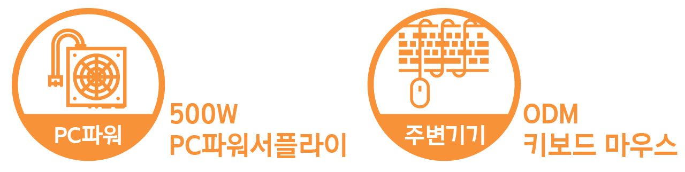
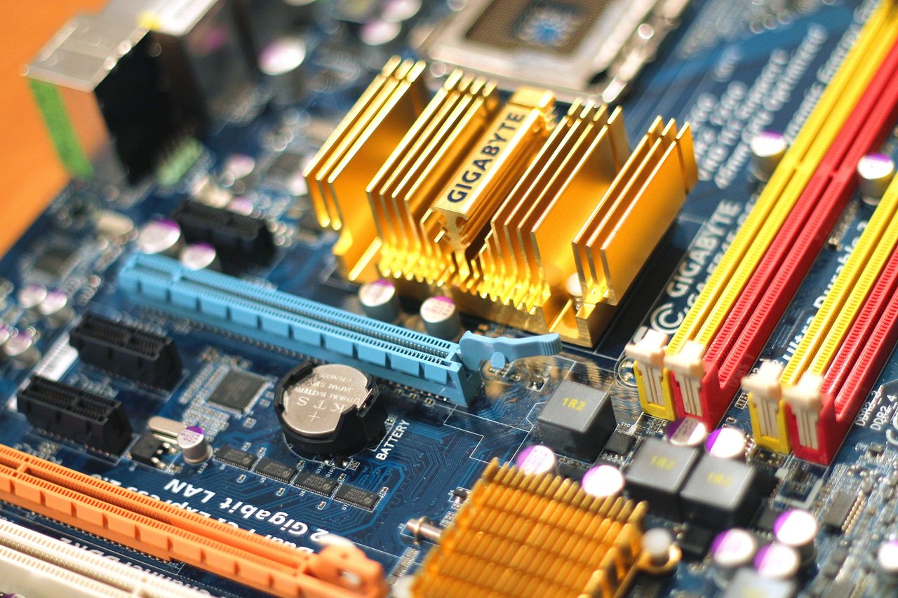

수리 기술을 접목한 제품생산 시스템을 구축했습니다.
2014년 공장설립 이후 IT기기와 모바일기기 관련 제조업 허가를 취득하였으
며 현재 PC부품과 키보드, 마우스 등 컴퓨터 관련 주변기기를 생산하고 있습
니다.
다년간 축적해온 수리 기술력을 젲업에 접목하여 품질 좋고 우수한 제품 생
산에 최선을 다하고 있으며 2015년에는 연구개발 전담부서, 2018년에는 기
업부설연구소를 설립하여 R&D와 인력 양성에도 아낍없는 투자를 진행하고
있습니다.

